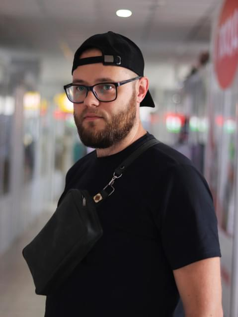
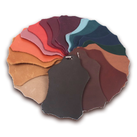

Доброго дня, мене звати Максим і я у вільний час для душевної рівноваги займаюсь виготовленням різного роду виробів з натуральної шкіри. Чому саме шкіра і що мене спонукало цим займатись? Все почалось в 2019 році, коли мені на день народження подарували шкіряний гаманець-портмоне. Тоді я і загорівся шкіряними виробами і вже через декілька місяців зробив свій перший гаманець, яким, до речі, користуюсь по сьогодні.


Найбільш популярними аксесуарами являються поясні ремені, гаманці, візитівниці, органайзери документів, чохли для телефонів, рюкзаки і сумки. При Вашому бажанні можу виготовляти вироби на замовлення.
Особливості шкіри "Crazy horse"
зовнішня зістаренність
матовість
м'якість
регенерація
водостійкість